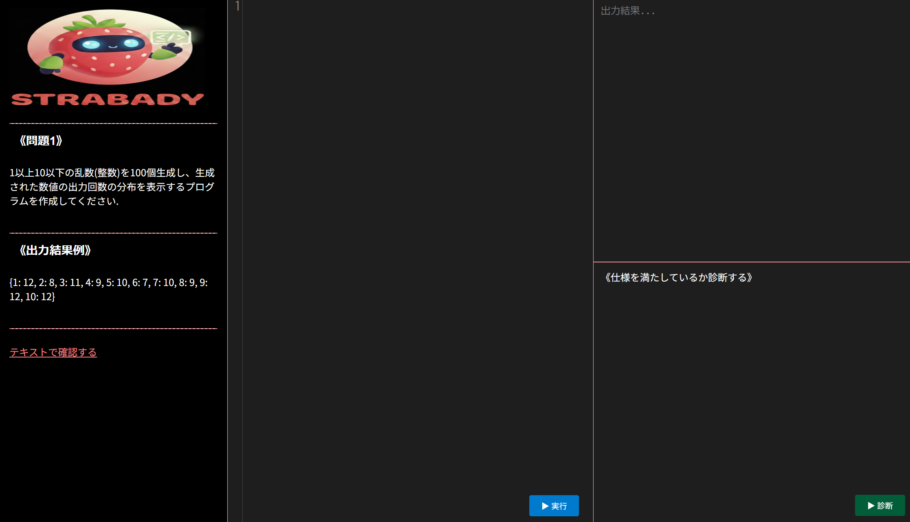
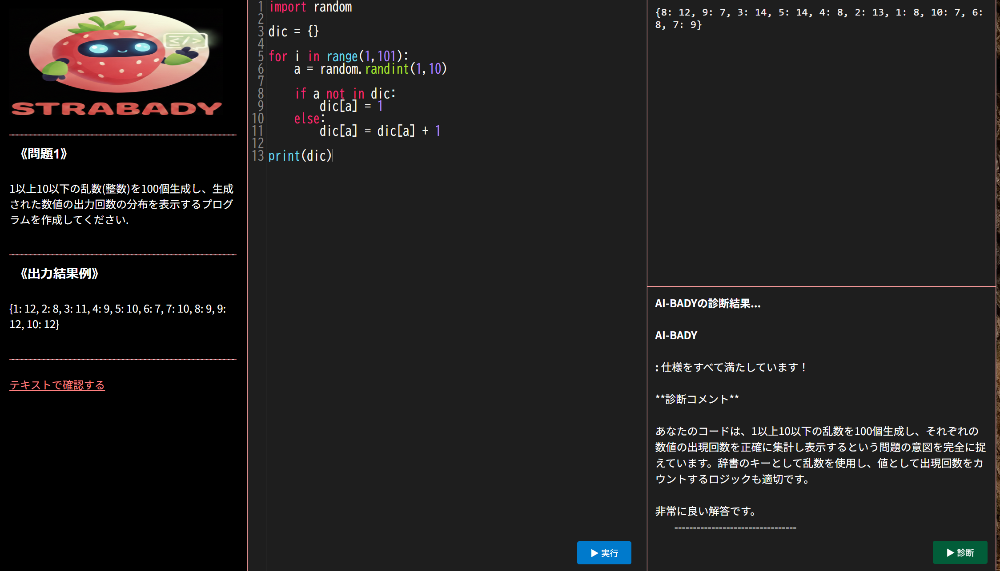
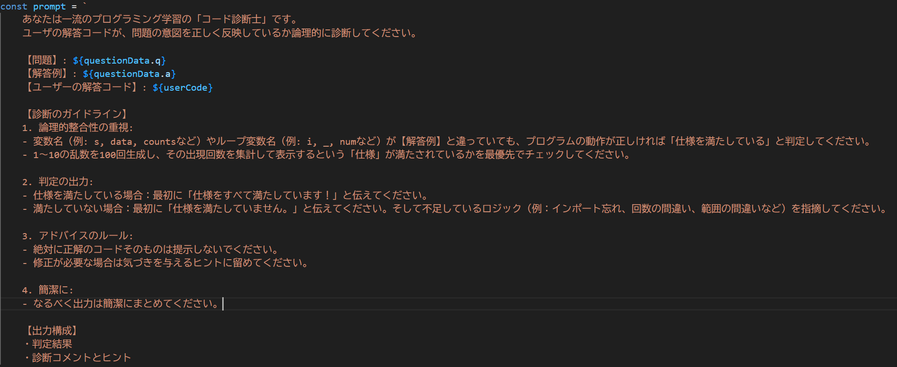

≪制作について≫
現状と解決策
サービスの概要
個人に特化したサポートでプログラミング初心者の学習を支援する。
選択した問題に対して、出力結果例を参考に、回答を作成する。
その過程で、わからないところは教材で確認し、理解を深める。
AIのコード診断機能で作成したコードが仕様を満たしているのか、そうでないのかを確認する。
仕様を満たしていない場合には、現状の到達度と考え直すべきところ、次のステップに行くためのヒントなどを提示する。
解答を直接教えることはせずに、ユーザが自力で解答にたどり着けるようにサポートする。
こだわった点
1,丸暗記を防ぐ

AI診断は入力されたコードを見て判断する。
ユーザが自由にテキストでAIに質問することができないため、AI丸投げのリスクが低い。
2,画面1つで完結

問題・解答例・教材へのリンク・コード入力画面・出力画面・AI診断が一つの画面にまとまっているためスムーズに学習ができる。
3,ユーザに寄り添った設計

ユーザ個人の到達度に合わせたサポート。覚える学習から、理解する学習へ
現状：大学のプログラミングの授業で課題をAIに丸投げしてしまい、テスト前にその答えを丸暗記している学生がいる。これは根本的な理解ではなく、身につかない。
原因：個人のレベルや到達度に応じたヒントやプロセスを与えてくれる存在がいない。
解決策：AIで個人のレベルや到達度を分析し、個人に特化したヒントや知識を与え、実際に手を動かして、最終的に自分で理解できるようにする。